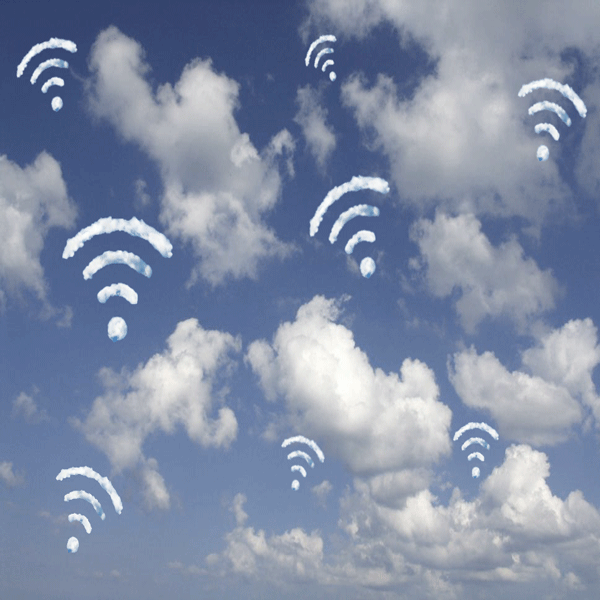

A Wireless World
The Transmission of Information
The transmission of information has taken many different forms over history. It is about the process of moving infomation from a source to the user. The usability of information depends on the efficiency and reliability of transmission chanells. In present day, large amounts of information can be spread around the world in seconds. Future methods and undiscovered technology propose a new world of accessing information and knowledge. As technology and communication has become so important in our daily lives, we begin to worship these technological figures that assist us with connecting to others. The future proposes these ideas of becoming obsolete and technology being infused and interwined with us as they influence our decisions and morals and determine the way we interact with others.
The Bluetooth Preacher
Historical forms of communication used story telling and the preaching of myths and legends to large groups of people. People would travel far and worship these preachers who taught and informed them of good and bad news. In present day, communication is transmitted through technology and signals such as bluetooth that allow information to be transmitted around the world in seconds. This technology is subconsciouly worshipped as many have become very dependant on it to connect with others and rely on being updated on current events around the world. The artefact; "The Bluetooth Preacher" proposes the idea how preaches used to be considered powerful, knowledgeable and respected by these people as their source of information, in present day wireless technology is considered to be powerful and worshipped by many.
Featured Images
The Bluetooth Preacher
Stone Writing
Drum Beating
Group Communication
Sound Signals
something
Integrated Technology
Angels & Siri
Mind Reading
"Our digital presence will not be seperate from the physcial world, but ingrained in it. It will become an omnipresent utility with information and the internet displayed in the real world not just on screens"
Read More
Stone Writing
Ancient forms of communication documented stories and events with the use of stone engravings. In contemporary times, texting and typing messages correlates to this pre-historic method of communication.

Drum Beating
The use of loud drums carry sound for many distances, making it easy to communicate different messages between indivduals. The drums were very sacred for certain tribes in historic times. When the tribe leader died, his blood was poured into the drums.

Smoke Signals
Smoke Signals alerted tribes near by of certain dangers. Different coloured smoke and positions allowed each tribe to identify what was trying to be communicated. In modern day, we communicate via satellite rays and signals.
Read more

Group Communication
Group communiction initiated through group gatherings in the era of cavemen. In contemporary times, we communicate in group forums with the use of social media and messaging apps.
Sound Signals
Pigeons were used to transmit information is historic time periods due to their natural instinct to travel and return to their nests each day. Virtual assistants in modern day, use voice recognition to assist with tranmistting infromation such as texts and phone calls.
Written Transmission
Prior to wirless technology, words would be spread via letters or passings on tablet stones. The first telegram in the United States in 1844, sent the message "What Hath God Wrought" over 71km from the Capitol in Washington to the old Mt.

Integrated Technology
Currently, our forms of wireless communication is seperated from our lives. We must externally access a seperate device to communicate with others. Future theories propose that such technology will be be seelessly integrated into our lives without the use of a device. Similarly to how wifi is integrated into the air and is unnoticed.
Angels & Siri
In the future, will AI assistant technology become worship like figures? Our lives are so dependent on technology that if it were to be removed it would change human interaction significantly. The power that technology has over everyone is powerful and almost can be compared to a god-like figure that is adored and glorified.
Mind Reading
Current methods of communication transmission such as texting and posting may become obsolete and considered ancient with the use of new transmission methods such as mind reading or knowledge insertment.